- Главная
- Медиа
- Фотогалерея
Фотогалерея
21 фотоальбомов: люди, города и события Восточного Казахстана.
Всего 21 альбомов, 1299 фотографий. Обложка — первое фото альбома; полные альбомы открываются на старом сайте.
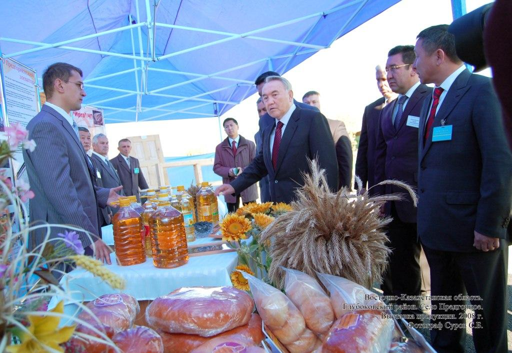
Президент РК Назарбаев Н.А. в Восточном Казахстане 44 фотоВыставка продукции. Глубоковский район, с.Предгорное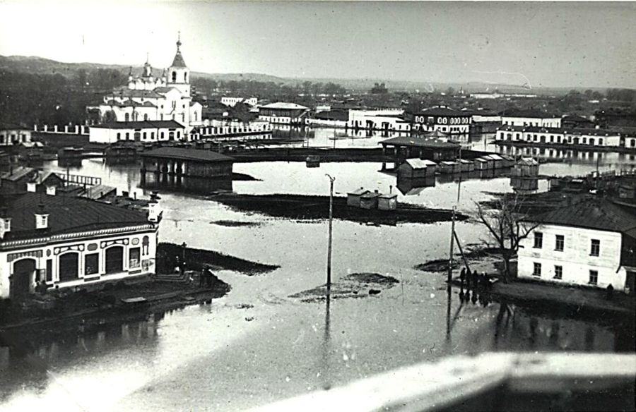
Мой град Устькаменный 91 фотоЦентр города. Наводнение 10 марта 1929 года.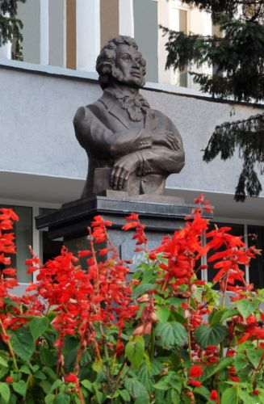
Усть-Каменогорск - ты город из мечты... 48 фотобюст великого, русского поэта А.С.Пушкина перед зданием Восточно-Казахстанской областной библиотеки…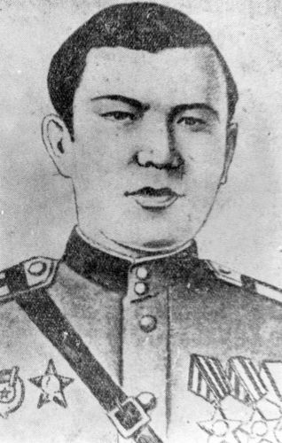
Герои Советского Союза Восточного Казахстана 64 фотоАйтыков Изгутты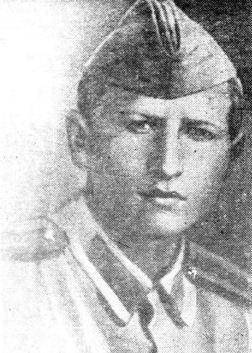
Полные кавалеры ордена Славы Восточного Казахстана 12 фотоАубакиров Маннаф Аубакирович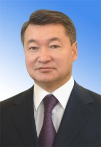
Акимы Восточно-Казахстанской области 9 фотоАхметов Даниал Кенжетаевич (1954г.р.) - назначен акимом Восточно-Казахстанской области с 11 ноября 2014 года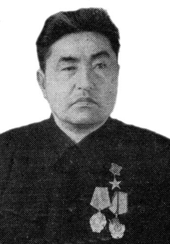
Герои Социалистического Труда восточноказахстанцы 74 фотоАйдарханов Бике родился в 1918 году в селе Казантай Лебяжинского района Павлодарской области. В 1937 году…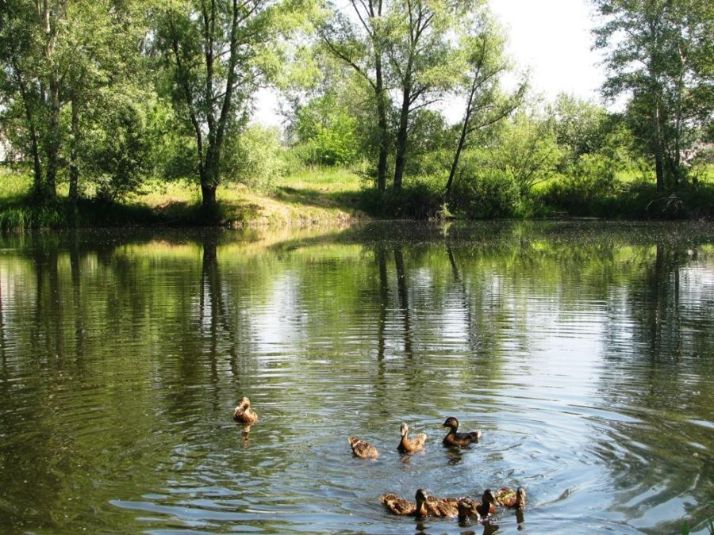
Природа Восточного Казахстана 147 фотофото Носовой И.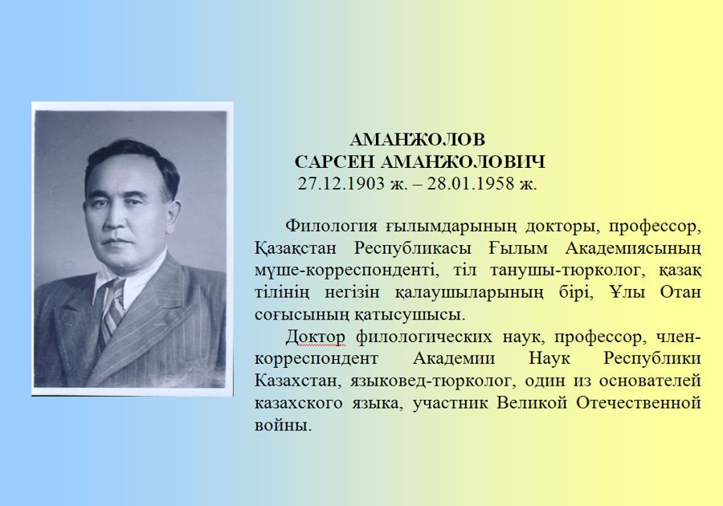
Они прославили Восточный Казахстан 21 фотоАманжолов С.А.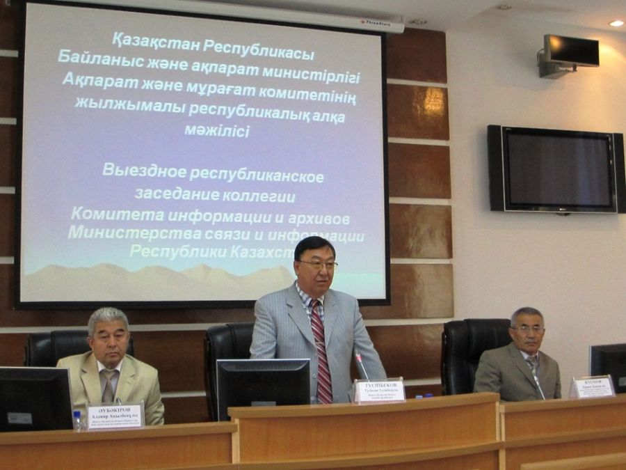
Записан для истории жизненный момент... 47 фотоВыездное Республиканское заседание коллегии Комитета информации и архивов Министерства связи и информации РК,…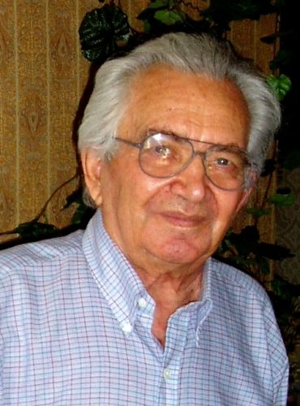
Почетные граждане города Усть-Каменогорска 54 фотоАлексеенко Николай Владимирович, 22.06.31г.р., г.Усть-Каменогорск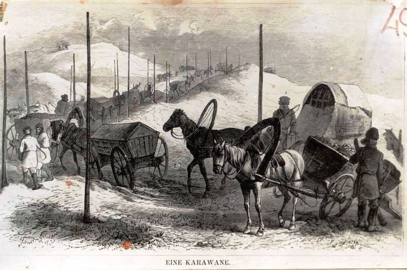
Зыряновск и зыряновцы 24 фотоПеревозка руды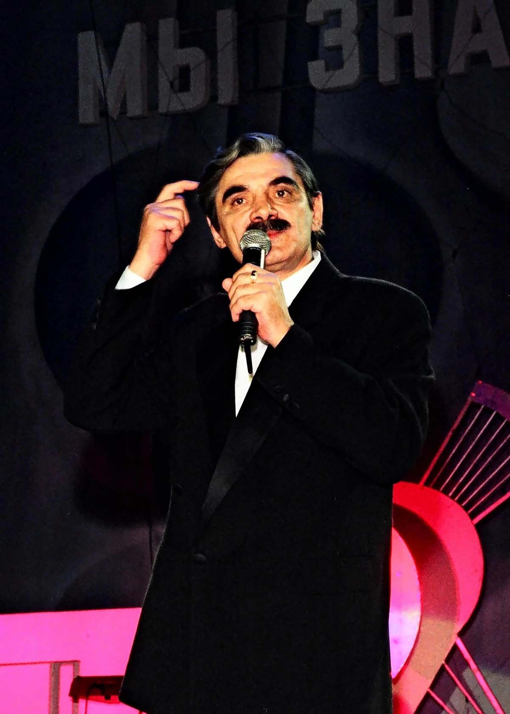
Звезды театра и кино в Усть-Каменогорске 18 фотоАлександр Панкратов-Черный, 1998 год. Фото И.Григорьева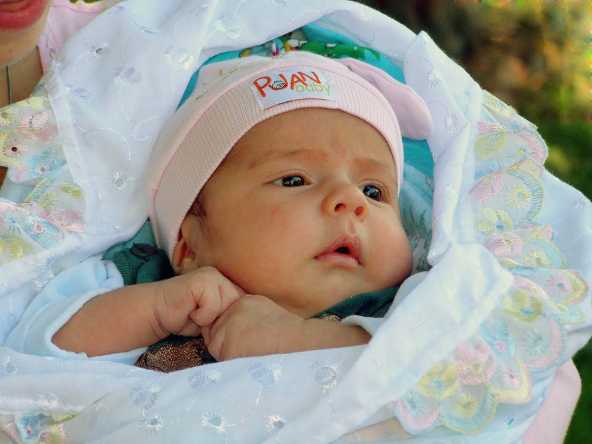
Фотоработы Игоря Григорьева 29 фото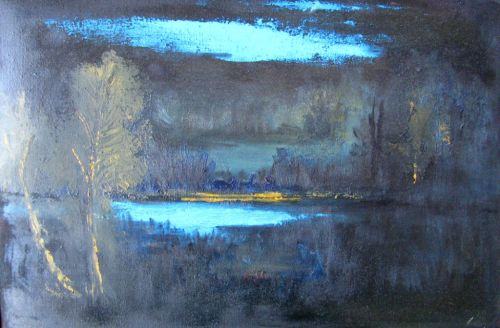
Уроки художника Семибратова 117 фото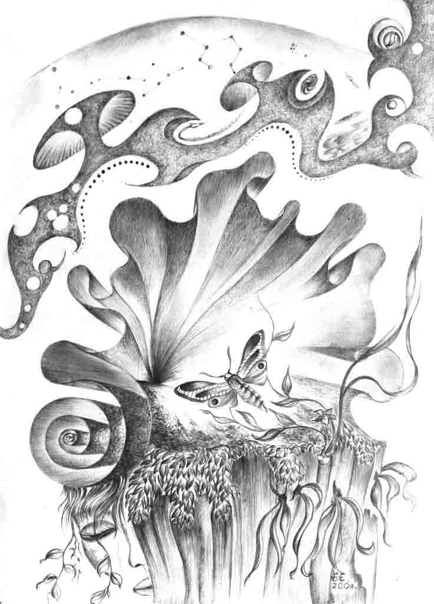
Графика Анатолия Бердюгина 116 фотоЖаксыбаев Наби Кульчаманович родился в 1912 году в одиннадцатом ауле Челкарского района Актюбинской области.…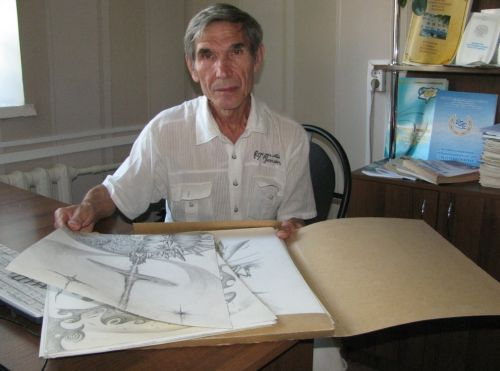
Живопись Анатолия Бердюгина 71 фотоБердюгин Анатолий Васильевич (10.05.1945г.) - Член Союза художников Казахстана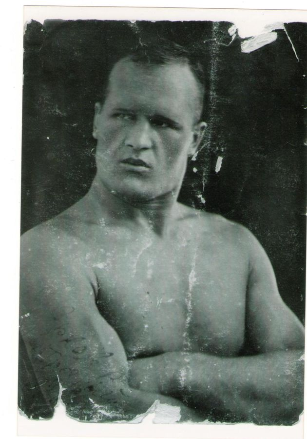
Василий Георгиевич Ярков (1911-1995) 95 фотоВ.Ярков. 1934 г.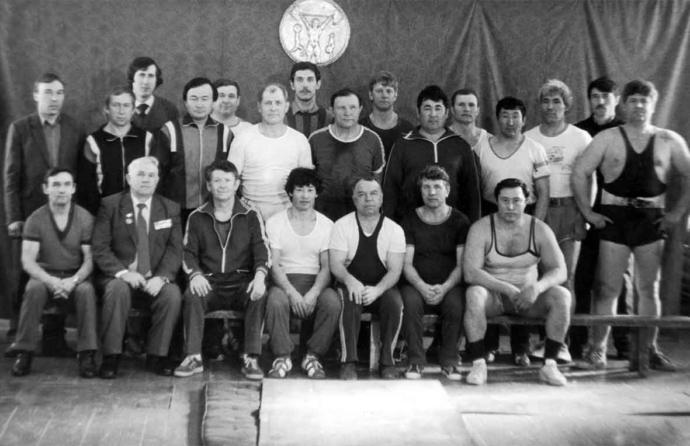
История гиревого спорта в ВКО 36 фотоТурнир ветеранов области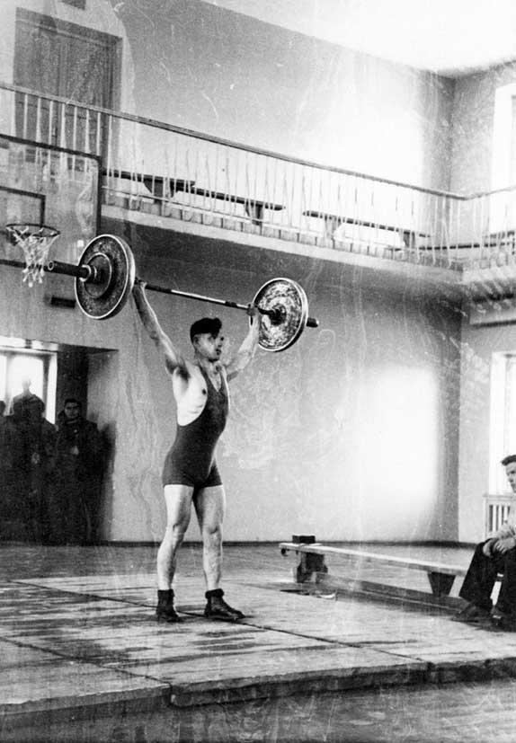
10 лет славы 62 фотоПервые старты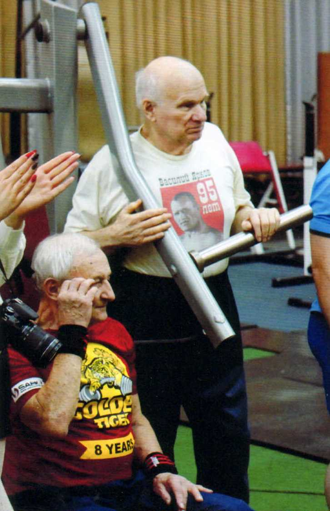
Атлетизм - пауэрлифтинг - бенч - пресс 120 фотоВ.Подрезов, 25.11.2018г.